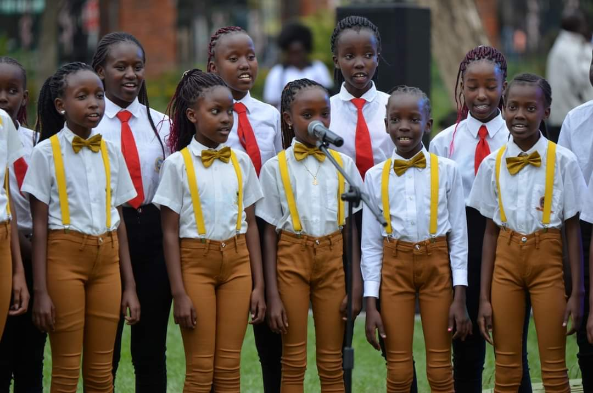
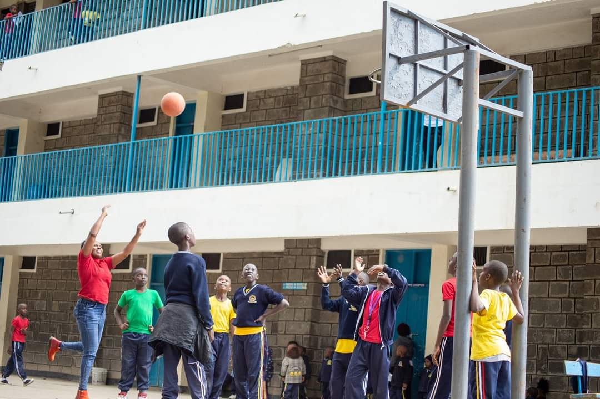

CURRICULUM
We give much credit to our team of tenacious teachers for their prompt coverage of the syllabus. We also thank the schools’ administration for their support in buying us relevant New curriculum materials which has aided a great deal with the implementation of the Competence Based Curriculum (CBC). We are highly convinced that the graduates are adequately prepared for transition to Grade One, having completed the Nursery School course which falls in line with the Ministry of Education requirements. The school offers the CBC Programme. Uniquely placed, this programme gives every child the ability to read independently and learn at their own pace, unlike where the teacher reads and writes for the learners. The Upper Primary offers the CBC Programme and current 8-4-4 system through which we have presented candidates for K.C.P.E for the last 13 years. This year we are optimistic that our candidates shall do equally well just like in previous years. Last year 2021 we had a mean score of 327. We indeed look forward to doing even better than any other year this year. In that connection, please join us in prayers for them that God will remember us all the more.

Competition we participate
Competition in Kenyan schools plays a significant role in promoting academic excellence, personal growth, and character development among students.
- Talent Shows and Cultural Competitions: Kenyan schools also organize talent shows, cultural festivals, and performing arts competitions. These events celebrate the diverse talents and cultural heritage of students. Students showcase their skills in music, dance, drama, poetry, traditional storytelling, and other artistic forms, promoting creativity, self-expression, and cultural appreciation. 
- Leadership Competitions: Leadership competitions, such as student council elections and leadership conferences, aim to develop students' leadership skills, responsibility, and civic engagement. Students participate in debates, speeches, and other activities to demonstrate their leadership potential and vision for their schools and communities.
- National Examinations: Kenyan schools prepare students for national examinations, such as the Kenya Certificate of Primary Education (KCPE).
- Science and Innovation Competitions: Kenya places a strong emphasis on science, technology, engineering, and mathematics (STEM) education. Schools participate in science and innovation competitions, such as science congresses, robotics challenges, and innovation exhibitions.
- Sports Competitions:Sports competitions are an integral part of Kenyan schools, fostering physical fitness, teamwork, and sportsmanship. Athletics, football, basketball, rugby, volleyball, and other sports are popular among students. Inter-school sports tournaments, championships, and athletics meets are organized at regional and national levels, offering opportunities for talented athletes to excel and represent our schools 
At Kings Academy we provides a platform for students to challenge themselves, discover their strengths, and develop valuable skills. It fosters a culture of excellence, personal growth, and healthy ambition. However, it is important to balance competition with an emphasis on collaboration, teamwork, and holistic education, ensuring that students' well-being and character development are prioritized alongside academic achievements.